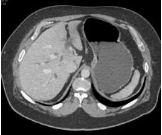
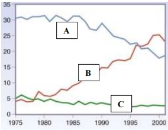
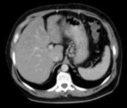
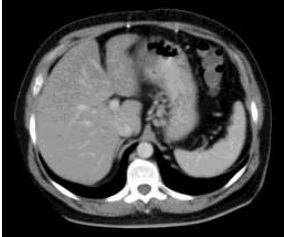
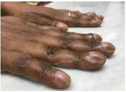
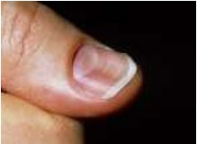

Na Atenção Domiciliar, podemos utilizar ferramentas especí cas que promovem a aproximação entre os pro ssionais de saúde e as famílias, sendo utilizadas de acordo com as necessidades vivenciadas. Podemos considerar como ferramenta(s) específica(s) da abordagem familiar: I. Método Clínico Centrado na Pessoa II. Olhar sistêmico III. Ciclo de vida familiar IV. Genograma V. Ecomapa Assinale a alternativa CORRETA.
Revisar: possível letra faltando em enunciado
Quarenta e oito por cento dos adultos relataram ter tido episódio de cefaleia que durou pelo menos 1 dia nos últimos 3 meses. Qual dos seguintes fatores melhor descreve essa taxa?
O Ministério da Saúde instituiu pela Portaria nº 2.836, de 1° de dezembro de 2011, a Política Nacional de Saúde Integral de Lésbicas, Gays, Bissexuais, Travestis e Transexuais (LGBT). Assinale a alternativa que corresponde ao objetivo geral dessa política.
Pernambuco foi o primeiro Estado brasileiro a desenvolver um programa específico para enfrentamento de doenças transmissíveis negligenciadas com o Programa Sanar, instituído pelo Decreto nº 39.497, de 11 de junho de 2013. Esse programa tem como objetivo reduzir ou eliminar enquanto problema de saúde pública as seguintes doenças transmissíveis negligenciadas: I. Doença de Chagas II. Esquistossomose III. Helmintíase IV. Filariose linfática V. Hanseníase Assinale a alternativa CORRETA.
No Brasil, desde 2011, as noti cações de violência doméstica, sexual e outras violências, são compulsórias para todos os serviços de saúde. Além da noti cação compulsória à autoridade sanitária, o Estatuto da Criança e do Adolescente determina a comunicação obrigatória de casos suspeitos e confirmados de violências contra crianças e adolescentes
O Plano de ações estratégicas para o enfrentamento das doenças crônicas e agravos não transmissíveis no Brasil (2021- 2030) destaca a transição epidemiológica tanto nas doenças crônicas e de seus fatores de risco e o crescimento das causas externas de morbimortalidade. Sobre o panorama da mortalidade por acidentes e violências no Brasil, é CORRETO afirmar que
Em 2018, uma conferência rea rmou o compromisso da Organização Mundial da Saúde com a Atenção Primária à Saúde com o lema "Saúde para todos". Assinale a alternativa que corresponde a esse marco.
Sobre os estudos epidemiológicos, qual dos seguintes estudos NÃO pode ser usado para identificar fatores prognósticos?
A Leishmaniose Visceral (LV) é considerada uma doença negligenciada endêmica em populações de baixa renda e ainda apresenta indicadores inaceitáveis, baixos investimentos em pesquisas e tratamento. Sobre a LV, analise as a rmativas abaixo: I. Os agentes etiológicos mais importantes no Brasil: II. A evolução clínica da LV pode ser dividida em três períodos: Inicial, de estado e final. III. No período final da doença os títulos de anticorpos específicos antiLeishmania são elevados. IV. No Brasil, a forma de transmissão é através da fêmea de insetos ebotomíneos das espécies de L. cruzi, infectados. V. Desoxicolato de Anfotericina B é medicamento de escolha no tratamento para gestantes. Assinale a alternativa CORRETA.
Um estudo de revisão comparou o desempenho do TESTE A versus o TESTE B no rastreamento do câncer colorretal. Em comparação com TESTE B, o TESTE A apresentou melhor detecção das lesões pré-cancerígenas que seriam tratadas para evitar cânceres subsequentes. Porém, o TESTE A também teve maior taxa de falso-positivos. Analise as a rmativas abaixo e assinale a INCORRETA.
O Sistema de Informação de Agravos de Noti cação, tem como principal fonte de dados as noti cações e investigações de casos de doenças e agravos que constam da lista nacional de doenças de noti cação compulsória, algo imprescindível para a identificação da realidade epidemiológica de determinada área geográfica. Sobre esse Sistema, assinale a alternativa INCORRETA.
Gestante G1P0A0 (8 semanas) com histórico vacinal desconhecido, chega à Unidade Básica de Saúde para acompanhamento. De acordo com o calendário nacional de vacinação da gestante, assinale a alternativa INCORRETA para o caso.
A Poliomielite é uma doença, que se encontra erradicada no Brasil desde o início dos anos 90, em virtude do êxito da política de imunização do Sistema Único de Saúde (SUS). Sobre a Poliomielite, assinale a alternativa CORRETA.
Sobre as tecnologias utilizadas nas vacinas para o enfrentamento da COVID-19, analise os itens abaixo: I. Coronavac - Vírus inativado SARS-CoV-2 II. Astrazeneca - Vetor viral particulas do Adenovírus recombinante III. Pfizer - RNA mensageiro IV. Janssen - Vetor viral Adenovírus tipo 26 - DNA recombinante Assinale a alternativa CORRETA.
A história da política previdenciária de saúde no Brasil teve origem na criação de uma estrutura de proteção social, instituída pela Lei Eloy Chaves em 1923. Assinale a alternativa que corresponde a essa estrutura.
No ano de 2021, 412 mil brasileiros morreram pela Covid-19. Qual dos seguintes fatores melhor descreve essa estatística?
O Relatório Belmont foi promulgado em 1978, nos Estados Unidos, devido aos escândalos causados pelos experimentos da medicina desde o início da 2ª Guerra Mundial. Como o caso Tuskegee study no Estado de Alabama, iniciado em 1932, mas descoberto apenas em 1972, no qual foram deixados sem tratamento quatrocentos negros si líticos para pesquisar a história natural da doença. Esse Relatório utilizou como referencial para as suas considerações éticas os seguintes princípios básicos: I. Respeito pelas pessoas II. Beneficência III. Não-maleficência IV. Justiça É(São) princípio(s):
Considerando o estudo da questão anterior, se o médico pensou que o paciente tinha TB por causa da hemoptise, em qual porcentagem dos pacientes ele estava certo?
Um estudo foi conduzido sobre os sinais e sintomas físicos em 247 pacientes avaliados para Tuberculose Pulmonar (TB). O diagnóstico nal foi feito de acordo com os achados da cultura (padrão-ouro). Noventa e cinco pacientes tinham TB, e 49 deles também tinham hemoptise. Cento e cinquenta e dois não tinham TB, e 79 desses pacientes tinham hemoptise. Analisando esse estudo, qual a especificidade da hemoptise para TB?
Sobre os Sistemas Nacionais de Informação em Saúde, temos um que foi implantado na década de 70, considerado um dos principais instrumentos para apoiar a elaboração de políticas públicas, visando à prevenção, promoção e cuidado em saúde. Assinale a alternativa que corresponde a esse Sistema.
Uma pré-escolar de 4 anos, peso 15 kg, internada em enfermaria de cardiologia pediátrica, portadora de uma cardiopatia congênita, evoluiu com piora grave do desconforto respiratório. Pediatra de plantão, após avaliação clínica e análise de gasometria arterial, decide pela intubação orotraqueal e instalação de ventilação mecânica assistida. Na sequência, a menor evoluiu com parada cardiorrespiratória (PCR). Em relação à PCR, analise as assertivas abaixo: I. Caso o monitor demonstre assistolia, a dose de epinefrina endovenosa, na diluição 1:1000, deverá ser de 0,1 ml por quilo de peso da menor. II. Se o monitor evidenciar uma taquicardia ventricular e a menor estiver sem quaisquer pulsos palpáveis, está indicado, de imediato, o uso de epinefrina, na diluição 1:1000, na dose de 0,1 ml por quilo de peso da menor. III. Uma vez que o monitor demonstre que a menor está em brilação ventricular, deve-se realizar a cardioversão numa carga de 1,5 J/Kg de peso da menor. Podemos afirmar que
Lactente feminino de 18 meses é internado com queixa principal de anemia súbita. Sua genitora refere que a palidez surgiu há cerca de 2 dias. A criança apresentou diarreia sanguinolenta há 6 dias, com leve melhora nos últimos dias. Foi relatada também diminuição da diurese há 24 horas. Ao exame clínico, chamou a atenção do pediatra: palidez +++/++++, desidratação, ausência de febre e frequência respiratória de 56 incursões por minuto. Exames laboratoriais na admissão hospitalar: - Hemoglobina = 6,0 g/dL; elevado número de esquizócitos; contagem de plaquetas = 35.000/mm³ ; teste de Coombs negativo; ureia = 156 mg/dL; creatinina = 2,4 mg/dL - Sumário de urina com hematúria e leucocitúria Diante dos dados acima, analise as assertivas: I. Há uma forte suspeita de tratar-se de um quadro sindrômico grave conhecido como microangiopatia trombótica. II. O provável diagnóstico da lactente é de síndrome hemolíticourêmica, tendo, como principal agente desencadeador, a toxina Shiga produzida pela III. Outros achados laboratoriais podem ser encontrados nesse caso, como hipercalemia, hiperfosfatemia e acidose metabólica. Assinale a alternativa
Pré-escolar de 4 anos, masculino, internado há 10 dias em hospital pediátrico de referência, com história de febre há 2 semanas, palidez, epistaxe discreta e emagrecimento, foi diagnosticado com Leishmaniose Visceral após visualização de amastigotas em medula óssea. Paciente não apresenta, no momento do diagnóstico, insu ciências cardíaca, hepática ou renal, aumento de intervalo QT em eletrocardiograma, icterícia, edema, dispneia além de ter investigação negativa para HIV. Último hemograma evidenciava contagem de leucócitos de 3.300/mm³ , plaquetas de 90.000/mm³ e hemoglobina de 8,2 g/dL. Diante do exposto, qual a primeira opção terapêutica a ser iniciada nesse paciente, de acordo com a Sociedade Brasileira de Pediatria?
Hugo, 7 anos, foi atendido na emergência pediátrica com quadro de tosse persistente há 12h, com piora nas últimas 6h. Está gripado há 2 dias. Nega febre. Ao exame físico: Ausculta respiratória com sibilos bilaterais, tiragem intercostal, tempo expiratório prolongado. FR: 40ipm; Saturação O₂ de 96% em ar ambiente. Fez corticoide oral em casa antes da chegada na emergência. Após a primeira hora de atendimento em que foi realizada b2 adrenérgico – 20/20 minutos – 3x (spray), ele persiste praticamente com a mesma clínica, porém sem piora. A conduta a ser adotada agora é a seguinte:
Ana Ester, sete anos, é atendida no posto de saúde pelo médico do PSF, com uma história de tosse, cansaço e febre há seis dias, sem outras queixas. Ao exame, apresenta-se com estado geral regular, taquipneica, afebril, corada, acianótica, sem sinais de desidratação, tempo de enchimento capilar < 2 segundos. Ausculta respiratória: diminuição de murmúrio vesicular em base direita, com estertores nos. FR=44 incursões por minuto, SatO2=95%. Restante do exame físico sem alterações. Iniciado amoxicilina. Após 72h, persistia febril, com aparecimento de tiragem intercostal e subcostal. Qual a conduta mais adequada para esse caso?
“A Bronquiolite Viral Aguda (BVA) é uma doença inflamatória, que afeta as vias aéreas de pequeno calibre, cursando com in amação aguda, edema e necrose de células epiteliais do trato respiratório. O agente etiológico mais comum é o Vírus Sincicial Respiratório (VSR).” Todos os fatores de risco listados abaixo indicam maior gravidade de BVA pelo VSR, EXCETO
Uma criança com 3 anos, pesando 14 kg, ao receber uma venóclise de manutenção por 24 horas, necessitará, de acordo com a fórmula de Holliday-Segar, de um volume total de soro de
Escolar de 8 anos, feminino, diagnosticada com suboclusão por „novelo inicialmente qual tratamento, em ambiente hospitalar, de acordo com as recomendações atuais?
Lactente com 3 meses de vida vem apresentando irritabilidade constante, caracterizada por „crises dias, evacuações mais frequentes e aquosas há 2 semanas e, nos últimos 10 dias, a mãe vem observando sangue vermelho vivo e muco nas fezes. Genitora nega febre ou vômitos. Menor faz uso exclusivo de fórmula infantil (F.I.) do primeiro semestre há cerca de 5 semanas, e o ganho de peso está sendo de aproximadamente 15 gramas/ dia nas últimas 4 semanas. Pediatra da criança observou em consultório que o menor se apresentava com estado geral preservado, eutró co em relação à curva da OMS, hidratado, hipocorado +/++++, distensão abdominal moderada, e agrou assadura perianal mas ausência de fissuras nesta mesma região. Diante do exposto, pensando na principal hipótese diagnóstica, a melhor conduta a ser adotada no momento é a seguinte:
Revisar: possível letra faltando em enunciado
Lactente de 4 meses, masculino, deu entrada em serviço de emergência pediátrica, pois os pais perceberam que o menor havia cado inicialmente pálido e depois com leve cianose em lábios, quando estava deitado no berço em posição supina. Lactente no momento da consulta estava acordado, mamando e com bom estado geral. Exame clínico evidenciou frequência respiratória de 34 movimentos por minuto, sem dispneia, corado, acianótico, afebril, hidratado, fontanela anterior normotensa, auscultas pulmonar e cardíaca sem alterações, oximetria de pulso de 98% e frequência cardíaca com 130 batimentos por minuto, além de tônus adequado para a idade. Glicemia capilar realizada na chegada à emergência registrou um valor de 72 mg/dL. Durante anamnese mais detalhada, pediatra fez alguns questionamentos e identi cou que: os sinais observados pelos pais duraram menos que 30 segundos; menor está em aleitamento materno exclusivo e com ganho de peso adequado; nunca apresentou episódio semelhante ao observado hoje, nem mesmo relatos de engasgos, alteração súbita do tônus ou irritabilidade; não necessitou de manobras de reanimação cardiopulmonar antes da chegada ao hospital; gestação sem intercorrências e nascido a termo com peso de 3,5 kg. Além disso, o lactente não apresenta nenhum sinal/ sintoma de infecção respiratória ou gastrointestinal, nem mesmo febre nos últimos 14 dias. Este é o primeiro lho do casal, e os pais não apresentam consanguinidade. Após 4 horas de observação na emergência, lactente estava dormindo nos braços da mãe e com bom estado geral. Diante do exposto, qual diagnóstico mais adequado/conduta o pediatra de plantão deverá realizar?
Revisar: possível letra faltando em enunciado
“Desde 2015, as coberturas vacinais vêm caindo no Brasil, atingindo seus piores marcadores no período pandêmico. Em 2020, a cobertura vacinal por grupo alvo para poliomielite foi de 75,88%”. SBP/ Nota de Alerta/ março de 2022. relação à doença imunoprevinível citada acima e considerando o Calendário Nacional de Vacinação do Ministério da Saúde de 2022, quantas doses da vacina inativada (VIP) e quantas da atenuada (VOP), respectivamente, uma criança com 6 anos de idade deve ter recebido? Para essa resposta, considere que a carteira vacinal desta criança está totalmente em dia, quer seja no esquema básico, bem como nos reforços, e não se deve considerar as doses extras de campanhas nacionais anuais.
Sobre as atuais recomendações e as vacinas disponíveis no Brasil para a vacinação pediátrica contra a COVID-19, analise as assertivas abaixo: I. Se um escolar estiver em atraso com a vacina contra a In uenza, ele poderá receber no mesmo dia as duas vacinas (Influenza e COVID-19). II. Em relação à vacina CoronaVac® , a formulação para crianças entre cinco e onze anos de idade corresponde a 1/3 da dose da vacina para adolescentes e adultos. III. Não há contraindicação para a vacinação de crianças com a CoronaVac® que apresentem histórico de alergias graves ao ovo. Podemos afirmar que
O departamento cientí co de Nutrologia da Sociedade Brasileira de Pediatria recomenda o uso do My Plate (meu prato), instrumento esse instituído nos Estados Unidos em 2011, no qual os grupos alimentares são distribuídos proporcionalmente, respeitando-se as recomendações da Pirâmide Alimentar. Assinale a alternativa que apresenta a CORRETA distribuição dos grupos alimentares de acordo com o instrumento My Plate, para um lactente de 11 meses
Revisar: possível letra faltando em enunciado
Em consulta de puericultura, a mãe de um pré-escolar masculino de 4 anos questiona ao pediatra sobre o peso atual do seu lho, pois acredita que ele está „magro dados antropométricos na curva da OMS para IMC, apropriada para sexo e idade do menor, estando este entre os percentis 85 e 97. Podemos a rmar que, de acordo com o estado nutricional, como este pré-escolar é classificado de acordo com os dados acima, sabendo que, na avaliação da altura, ele encontra-se no percentil 50?
Diante de uma suspeita clínica de Estenose Hipertró ca do Piloro, qual alternativa abaixo apresenta marcador(es) que é(são) altamente sugestivo(s) de tal patologia?
Revisar: possível letra faltando em enunciado
“O leite humano tem vários fatores imunológicos específicos e não específicos que conferem proteção ativa e passiva contra infecções às crianças amamentadas”. Tratado de Pediatria/ SBP/2022. Assinale a alternativa que apresenta um componente do leite materno que NÃO é considerado um fator clássico de proteção imunológica para o recémnascido/ lactente.
Considere um recém-nascido, sexo feminino, com diagnóstico de hiperplasia adrenal congênita, forma clássica, por deficiência de 21-alfa-hidroxilase. Qual dos marcadores listados abaixo deverá estar caracteristicamente reduzido ao ser mensurado nesta criança?
Quanto à sífilis congênita, é CORRETO afirmar que
Recém-nascido termo com 72 horas de vida apresenta icterícia que se iniciou com 36 horas de vida. Em aleitamento materno exclusivo e pesando 3200gramas. Genitora GIPIA0, pré-natal sem intercorrência, classificação sanguínea da mãe O negativo, Coombs indireto negativo e nega antecedente de transfusão sanguínea ou sangramentos. O recém-nascido nasceu bem, pesando 3250 gramas e recebeu todos os procedimentos recomendados em sala de parto. Exame físico: icterícia em face, tronco e membros. A classificação sanguínea do pai é O positivo. Exames laboratoriais: bilirrubina total 16,2mg/dL, bilirrubina indireta 15,8mg/dL, hemoglobina 21,6g/dL, hematócrito 66,7% e reticulócitos 4,8%. A provável causa desta icterícia deve ser
Recém-nascido de 33 semanas de idade gestacional nasceu de parto cesáreo de urgência por eclâmpsia materna. Nasceu deprimido e necessitou de manobras de reanimação. Apresentou Apgar 1 em sala de parto. Exame físico: estado geral decaído, gemente, dispneico e reativo. AR: murmúrio vesicular diminuído globalmente, tiragem subcostal, batimento de asa de nariz, FR: 82ipm, SatO₂ 89% em ar ambiente. Dentre as medidas abaixo realizadas na gestante, a que teria maior eficácia em prevenir esta condição clínica seria a seguinte:
Paciente 35 anos procura o serviço de ginecologia, por apresentar, inicialmente na mama esquerda, alteração da cor da pele, evoluindo de um rosado claro que em duas semanas passou a ser um rash vermelho associado a edema (casca de laranja). A alteração se espalhou rapidamente por toda a mama e agora criou umas endurações difusas. Informa também que a mama dobrou de tamanho. Diante do achado, qual o provável diagnóstico?
Mulher de 26 anos, G1P1, assintomática, leva ao ambulatório de ginecologia exame de Papanicolau realizado há 10 dias. O resultado revela
Mulher de 25 anos, G1P1 (vaginal), procura o ambulatório de ginecologia por se apresentar com nódulos inflamatórios que progrediram para úlceras altamente vasculares, avermelhadas e carnudas, sangram com facilidade ao contato. Refere ter tido episódio parecido no ano anterior que deixou uma cicatriz brosa semelhante a queloide na região inguinal. Fez uma biópsia há 15 dias que demonstrou células mononucleares contendo corpos ao redor. Qual o provável diagnóstico?
Paciente de 20 anos, G0 P0, tenta engravidar há dois anos sem sucesso e sem métodos contraceptivos. Revela ainda que já cou sem menstruar por três meses em algumas ocasiões. Informa ter, em média, três atividades sexuais por semana. Durante exame físico, percebe-se aumento do peso corporal, Acantose nigricans em região posterior da nuca e pelos em sulco intermamário. Traz consigo dosagens séricas de androgênios normais e exame de ultrassonogra a da pelve sem alterações. Considerando o quadro acima, qual achado corresponde à resistência insulínica aumentada?
Paciente de 35 anos, G2P1A1 (ectópica tubária há 4 anos), veio ao ambulatório de ginecologia para solicitar a inserção de dispositivo intrauterino medicado com levonogestrel. Como antecedentes, informa ser portadora de enxaqueca com aura, fumante de 10 cigarros por dia. Além disso, teve uma trombos e venosa profunda na perda direita, há dois anos. Qual das condições acima representa contraindicação ao DIU medicado?
Paciente de 35 anos, G2P2 (cesarianas), procurou o ambulatório de ginecologia por apresentar ausência de menstruação por seis meses. Informa que seu ciclo sempre foi regular e que, no mesmo período, começou a apresentar saída de secreção láctea pelas papilas mamárias. Sem demais sintomas. Usa como contracepção a laqueadura tubária. Faz uso de Risperidona como antipsicótico e Losartana, iniciados há seis meses. Beta HCG negativo e exame ecográ co transvaginal normal. Considerando o cenário acima, qual o provável mecanismo fisiopatológico para esta amenorreia secundária?
Revisar: possível letra faltando em enunciado
Paciente de 30 anos, G1P1 (cesariana), procurou o serviço de ginecologia com queixa de sangramento genital esporádico há algumas semanas. Traz consigo um exame citológico (Papanicolau) mostrando células glandulares atípicas de significado indeterminado provavelmente não neoplásicas. O exame ginecológico revelou sangramento uterino anormal. De acordo com o cenário acima, qual a melhor conduta?
Mulher de 25 anos chega à emergência ginecológica, com quadro de sangramento genital com odor desagradável há vários dias. Informa sangramento durante atividade sexual. O exame ginecológico revela tumoração cervical de 06 cm, restrita ao colo uterino. Vagina e paramétrios estão livres. Não possui exames complementares. Considerando o quadro acima, no momento, qual o provável estadiamento até o momento e tratamento?
Paciente de 65 anos procura ambulatório de ginecologia com queixa de “bola” na vagina há três meses. Nega perdas urinárias. Nega demais queixas. G4P4 (partos vaginais). O exame de POP-q é representado no quadro abaixo: De acordo com o exposto acima, é CORRETO afirmar que a paciente apresenta
Mulher de 25 anos chega à emergência obstétrica, com sangramento genital aumentado, sem cólica, há três dias. Traz consigo dosagem sérica da fração beta do HCG com valor de 1500UI. Pela data da sua menstruação, acha que está com 11 semanas de gravidez. O exame físico confirmou sangramento uterino com fundo uterino ultrapassando a sín se púbica em quatro centímetros. O exame ultrassonográ co revela massa intrauterina ecogênica completa contendo vários espaços císticos pequenos. Tecidos fetais e saco amniótico ausentes. De acordo com o quadro acima, é CORRETO afirmar que
Revisar: possível letra faltando em enunciado
Assinale a alternativa INCORRETA referente às recomendações da Organização Mundial da Saúde (OMS) dos cuidados intrapartos para uma experiência positiva da gestante.
Paciente 22 anos de idade, primigesta e na 41ª semana de gravidez. Veio para emergência obstétrica com queixa de dor em baixo ventre há 12h tipo cólica. Ao exame, dinâmica uterina de 4 contrações/10 minutos/55 segundos. Batimentos cardiofetais de 156 bpm. Altura de fundo uterino de 34cm. Toque vaginal com 6 cm de dilatação, bolsa das íntegras, cefálico e 80% de esvaecimento cervical. O trabalho de parto evoluiu de forma lenta e, durante o período expulsivo, ocorreu o sinal da tartaruga. Assinale a alternativa que NÃO é fator de risco para o diagnóstico do período expulsivo.
Paciente 18 anos de idade, na 11ª semana de gestação, veio para sua 1ª consulta de pré-natal. Na anamnese, referiu uma ferida ulcerada única, indolor e sem ardor ou secreções purulentas em lábio vaginal direito há aproximadamente 8 meses, a qual regrediu espontaneamente sem tratamento. Nessa consulta trouxe exames préconcepcionais, que chamaram a atenção pelo VDRL de 1/16. Qual a conduta adequada que o pré-natalista deve fazer?
Em qual das alternativas abaixo está indicado iniciar medida medicamentosas para prevenção do trabalho de parto prematuro e a medicação recomendada?
Em qual das alternativas abaixo NÃO se encontra indicado iniciar medidas medicamentosas para prevenção da pré- eclâmpsia/eclâmpsia?
Gestante tercigesta na 12ª semana de gravidez, procurou o pré-natal trazendo resultado dos exames de rotina. No momento, refere cefaleia, tonturas, náuseas e vômitos. A glicemia de jejum foi de 92mg/dL. Assinale a alternativa CORRETA quanto à interpretação e conduta mais adequada.
Paciente primípara na 8ª semana de gestação procurou a emergência obstétrica com queixa de sangramento e dor em baixo ventre tipo cólica. Ao exame, no toque vaginal, percebeu-se o colo uterino pérvio e presença de sangramento. Baseando-se em evidências atuais, qual das opções terapêuticas abaixo é a menos recomendada?
Paciente primigesta na 28ª semana de gravidez. Procurou a emergência com queixa de formigamento em mãos e inchaço em membros inferiores. Negava outras queixas. Exames complementares normais. Ao exame, pressão arterial de 150 x 100 mmHg (confirmada), dinâmica uterina ausente, edema 3+/4+ e batimentos cardíacos fetais de 146 bpm. Toque vaginal não realizado. A proteinúria de fita revelou +/4+. Assinale a hipótese diagnóstica mais provável, segundo as recomendações atuais.
No dia 14 de dezembro de 2022, paciente, primigesta, chegou à emergência obstétrica com queixa de sangramento discreto. Referia dia da última menstruação (DUM) em 15 de setembro de 2022 e que foi submetida a uma ultrassonogra a em 07 de novembro de 2022, a qual constatou idade gestacional pelo comprimento céfalo-nádegas de 8 semanas. Assinale a alternativa CORRETA que representa a idade gestacional mais adequada para acompanhamento da gravidez no dia da consulta da emergência.
Assinale a alternativa CORRETA sobre a definição de insinuação na apresentação cefálica.
Nos últimos 5 anos, mudanças foram sugeridas no tratamento da apendicite não-complicada. O dilema “antibioticoterapia X cirurgia” foi avaliado por vários estudos randomizados. O que podemos concluir desses estudos?
Mulher, 32 anos, em tratamento clínico de pancreatite aguda grave com necrose não infectada. Na 3ª semana, evolui com grande distensão e dor abdominal. Apresenta ainda oligúria e acidose. O plantonista sugere que a paciente esteja com síndrome de compartimento abdominal. Qual a melhor maneira de medir e que nível de pressão indica a laparotomia?
Homem, 22 anos, apresenta trauma corto-contuso por cerol em zona II cervical, chega à emergência taquidispneico, com estridor respiratório, sangramento ativo em ferida cervical medindo 1cm e en sema subcutâneo. Qual a conduta inicial adequada para o caso?
Durante o curso de seu internamento, o paciente da questão anterior evoluiu com dor abdominal em QSD, sonolência e insu ciência respiratória. Foi submetido à USG de abdômen que evidenciou líquido pericolecístico, vesícula de paredes espessadas com cálculos em seu interior, colédoco de calibre normal. Seus exames laboratoriais mostram leucocitose com desvio à esquerda e PCR elevada, além de bilirrubinas discretamente aumentadas. Diante do exposto, qual a conduta adequada para o caso?
Homem, 86 anos, acamado, passado de AVE, insu ciência cardíaca com FE 21%, evoluindo com disfagia progressiva há 2 anos. No momento, não aceita nem líquidos. Foi avaliado pela fonoaudiologia que não evidenciou distúrbio de deglutição. Submetido à endoscopia digestiva alta, porém o esôfago encontrava-se com importante aumento de seu calibre e com grande quantidade de resíduo sólido não aspirável por endoscopia, não sendo possível identificar ou ultrapassar a cárdia. Analisando o caso em questão, qual a próxima conduta a ser tomada?
Homem, 70 anos. Diabético descompensado. Há um dia, apresentou dor, edema e hiperemia em bolsa escrotal. Nas últimas 6h apresentou choque séptico e foi submetido a desbridamento radical da região escrotal e períneo. Qual antibiótico abaixo deve estar prescrito no pós-operatório?
Dentre as comorbidades abaixo, qual delas, associada à obesidade grau II, NÃO consta como indicativa de cirurgia bariátrica?
O(A) Médico(a) Residente deve saber interpretar e analisar criticamente a literatura cientí ca. O conhecimento sobre os tipos de estudo é crucial. Assinale a alternativa que caracteriza os estudos cirúrgicos tipo caso-controle.
Revisar: possível letra faltando em enunciado
Mulher, 32 anos, sem comorbidades, apresentou episódio de sangramento digestivo, sendo submetida à colonoscopia que evidenciou: uma lesão séssil de 3cm, friável, em cólon ascendente com sinais de sangramento recente, além de dois pólipos subcentimétricos em sigmoide e três pólipos subcentimétricos em cólon transverso. O histopatológico da lesão maior concluiu adenocarcinoma, os das demais lesões, adenomas tubulares. Sobre o caso em questão, assinale a alternativa CORRETA.
Mulher, 25 anos. Dor anal forte durante a evacuação há 2 meses. Refere sangramento de pequena monta no papel higiênico. Ao exame: presença de lesão elíptica de 1 cm em linha média anterior. Em relação a essa situação clínica, assinale a alternativa CORRETA.
Mulher, 72 anos. História de icterícia e perda de peso há 2 meses. Após realizar TC de abdome, recebeu o diagnóstico de colangiocarcinoma. Após análise da imagem abaixo, como podemos classificar essa lesão?

Mulher, 58 anos, submetida à gastrectomia total por adenocarcinoma de fundo gástrico. No pós-operatório imediato, foi encaminhada para a UTI e coletados os seguintes exames laboratoriais: Leucograma 10400, Hb 9,7, Ht 32%, pH 7,21, pCO² 27, HCO³ 14, LAC 2,4. No primeiro dia de pós-operatório, encontrava-se consciente, orientada, eupneica, corada, sem dor abdominal, diurese 1,1ml/kg/h, balanço hídrico +1700ml e com os seguintes exames laboratoriais: Leucograma 16500 Hb 7,8 HT 23,4% pH 7,37 pCO² 31 HCO³ 21 LAC 1,1. Assinale a alternativa CORRETA sobre a paciente em questão.
O cirurgião é comumente chamado para avaliar pacientes com pancreatite aguda. As dosagens séricas de amilase e lipase fazem parte dos critérios diagnósticos de doença. Em relação a essas enzimas, é CORRETO afirmar que
Assinale a alternativa CORRETA sobre as hérnias tipo III C de Nyhus.
O gráfico abaixo demonstra a tendência de incidência dos principais tipos de tumores esofágicos entre 1975 e 2001. Analise-o com atenção. Sobre ele, assinale a alternativa CORRETA.

Homem, 68 anos, tabagista ativo, en sematoso, hipertenso e diabético, será submetido a uma colectomia direita por um adenoma de ceco. Qual das medidas abaixo NÃO ajudará a prevenir hérnias incisionais?
Homem, 31 anos. Vítima de agressão por PAF. Observa-se orifício de entrada em sulco nasogeniano direito e saída no esternocleidomastoideo esquerdo, ao nível da proeminência laríngea. Apresenta-se estável e com hematoma próximo ao orifício de saída. Sobre isso, assinale a alternativa CORRETA.
3. Homem, 48 anos, no 14º dia de pós-operatório de colecistectomia por vídeo devido à colecistite aguda, retorna ao hospital, com quadro de dor abdominal intensa, associada a vômitos. Foi submetido a exames laboratoriais: Leucograma 8000 s/desvio, TGO 89, TGP 110, FA 250, GGT 448, BD 1,5, amilase 100. Optou-se por realizar uma colangioressonância, que evidenciou leve dilatação de vias biliares por toda sua extensão, porém sem sinais obstrutivos claros. Após medicação, houve melhora dos sintomas e alta. Quatro dias depois o paciente retorna ictérico, com o retorno da dor abdominal e vômitos, sendo coletado novos exames: Leucograma 6500 s/desvio, TGO 218, TGP 414, FA 450, GGT 876, BD 7,8, amilase 82. Qual a principal hipótese diagnóstica e conduta mais adequada para o caso em questão?
O paciente da questão anterior realizou a TC de abdome abaixo. Nela podemos constatar que

Homem, 78 anos, peso histórico de 62 kg, diagnosticado recentemente com adenocarcinoma gástrico. Refere perda de 5 kg no último mês. Em relação ao NRS (2002) e à conduta nutricional, é CORRETO afirmar que

Uma mulher na décima semana de gestação, assintomática, realizou urocultura que isolou 100.000 UFC/ml de Qual das opções abaixo seria a mais adequada para o caso?
Durante uma consulta ambulatorial de rotina de um paciente com 65 anos, você percebe essa alteração no exame físico. Se você pudesse solicitar apenas um exame para investigação, qual dos exames abaixo escolheria?

Uma paciente de 33 anos, nulípara, recebeu o diagnóstico de nefrite lúpica classe IV. Sua função renal é normal, mas a proteinúria de 24 horas é de 3,5g. Qual seria a melhor opção para o tratamento de indução neste caso?
Em junho de 2022, você está de plantão numa emergência do Recife quando chega um paciente de 22 anos com queixas de febre, cefaleia e mialgias há sete dias. Nas últimas 24 horas, começou a apresentar, também, tosse seca discreta. Ao exame físico, há sufusões conjuntivais, dor à palpação de panturrilhas e febre. O paciente está anictérico e eupneico. Exames admissionais mostram leucocitose com desvio à esquerda e plaquetopenia, CPK elevada, transaminases tocadas com bilirrubina normal, disfunção renal (creatinina 1,8 mg/dl e ureia 70 mg/dl) com hipocalemia (2,8 mEq/litro). Radiogra a de tórax mostra infiltrado alveolar bilateral. Qual das condutas abaixo NÃO seria adequada para esse caso?
Um paciente de 80 anos foi admitido no hospital devido a um episódio de brilação atrial de frequência rápida. Familiares referiam também quadro de perda de peso, apatia, declínio cognitivo, dispneia e fraqueza muscular ao longo dos últimos seis meses. Qual dos exames abaixo será mais útil para a definição diagnóstica neste caso?
Um paciente de 50 anos procura o médico preocupado porque seu irmão apresentou um infarto do miocárdio recente. Ele não apresenta comorbidades, como diabetes, hipertensão ou dislipidemia, mas fuma há mais de 20 anos. Sobre o tratamento de cessação do tabagismo, assinale a alternativa CORRETA.
Uma paciente de 18 anos refere que, nos últimos quatro meses, apresentou dois episódios de edema súbito de pálpebras e lábios que duraram cerca de três dias. Procura o médico assustada porque na semana passada apresentou episódio de di culdade respiratória e rouquidão, que foi diagnosticado como edema de glote. Nega urticária e prurido nas crises. Nega consumo de alimentos ou medicamentos suspeitos nos episódios e refere uso apenas de anticoncepcional oral, iniciado há seis meses. Qual procedimento, dentre os abaixo citados, seria mais útil para estabelecer o diagnóstico desta paciente?
Sobre o risco de hepatotoxicidade pelo paracetamol, é CORRETO afirmar que
Um paciente de 21 anos procura o ambulatório com queixas de pirose ocasional e episódios esporádicos de di culdade para engolir. Nega disfagia no dia a dia, mas relata alguns episódios em que “o alimento ca preso” no esôfago, o que o obriga a forçar o vômito para obter alívio. Como antecedentes referia, apenas, rinite alérgica e passado de apendicectomia. Qual dos exames abaixo seria fundamental para o diagnóstico desse caso?
Revisar: possível letra faltando em enunciado
Uma paciente de 60 anos procura o serviço com queixas de febre alta, rash macular, mialgias, hiperemia conjuntival e poliartralgia bilateral simétrica de forte intensidade há quatro dias. Ao exame físico, percebem-se sinais de tenossinovite. Os exames complementares mostram leucopenia com linfopenia, plaquetas 146.000/mm3 , TGO (AST) 80 UI/ml e TGP (ALT) 180 UI/ml. As sorologias estão em andamento, ainda sem resultado. A paciente refere episódio prévio de edema de glote, desencadeado por exposição a dipirona, e que as dores articulares não estão cedendo com o uso de paracetamol 750 mg de 6/6 horas. Qual a melhor opção dentre as abaixo relacionadas para o tratamento das artralgias neste caso?
Um paciente portador de cirrose alcoólica foi admitido na UTI após apresentar hemorragia varicosa que se desenvolveu no terceiro dia de tratamento de peritonite bacteriana espontânea. Após estabilização hemodinâmica e realização de endoscopia, estava recebendo a segunda unidade de concentrado de hemácias, quando passou a apresentar febre, calafrios e dispneia. Rapidamente evoluiu com grave insu ciência respiratória hipoxêmica e, durante a intubação orotraqueal, foi observada uma secreção rósea espumosa em vias aéreas. Sobre o quadro descrito, assinale a alternativa CORRETA.
Você está de plantão em uma UTI onde está internado há 12 horas um paciente de 22 anos que sofreu acidente de motocicleta. No plantão anterior, foi realizada tomogra a de crânio que evidenciou extenso trauma encefálico com hematoma parenquimatoso, sem condições cirúrgicas. O paciente está em ventilação mecânica, irresponsivo a estímulos dolorosos, PA 80 x 60 mmHg, sat O₂ 95%. Qual o procedimento indicado nesse momento?
Durante o exame físico de uma paciente de 25 anos, você observa a alteração ungueal apresentada na figura abaixo. Qual dos sintomas/sinais abaixo citados NÃO é relacionado ao achado?

Uma paciente de 25 anos, portadora de enxaqueca desde a puberdade, observou aumento da frequência das crises, o que relacionava à tensão durante a preparação para o concurso da residência médica. Passou a usar paracetamolcodeína com frequência quase diária nos últimos seis meses. Há 20 dias, a cefaleia se tornou praticamente contínua e não está melhorando com o aumento da dose dos analgésicos. O exame neurológico é totalmente normal e não há outros sintomas sistêmicos. Qual seria a melhor conduta neste momento?
Em um paciente diabético tipo 2 com múltiplas comorbidades (doença renal crônica (clearance de creatinina 28 ml/min/1,73 m²), hipertensão arterial e insuficiência cardíaca), qual dos abaixo NÃO seria um benefício da prescrição de empagliflozina?
Uma paciente de 72 anos, previamente hígida e sicamente ativa, procurou o médico com queixas de dores em ombros e pescoço há 40 dias. Refere que a dor piora durante a noite, chegando a acordá-la de madrugada, além de apresentar rigidez matinal, quando só consegue tirar a camisola cerca de uma hora após o despertar. Ao exame físico, as provas para avaliação de força muscular são normais, mas há dificuldade para abdução e elevação passiva dos ombros. Qual dos exames abaixo será mais útil para a elucidação diagnóstica deste caso?
Um paciente de 45 anos procurou a emergência com história de icterícia e colúria há sete dias, evoluindo com vômitos recorrentes. À admissão o paciente estava consciente e orientado, com fígado palpável cerca de 3 cm abaixo do rebordo costal direito e seus exames laboratoriais mostravam: TGO (AST) 1850 UI/ml - TGP (ALT) 3500 UI/ml - BT 10,8 mg/gl – BD 8,0 mg/dl – INR 2,1. Investigação sorológica mostrou antiHVA IgM negativo, antiHVA IgG positivo, antiHBc IgM positivo, HBsAg negativo. Com relação ao caso, assinale a alternativa CORRETA.
Um paciente branco de 60 anos, portador de insu ciência cardíaca com fração de ejeção de 35%, persiste sintomático, apesar de usar doses otimizadas de enalapril, carvedilol e espironolactona. Sabendo que não há edema periférico significativo, o ritmo cardíaco é sinusal, com frequência cardíaca em torno de 65 bpm e PA 130x90 mmHg, qual das condutas abaixo traria maior benefício em termos de redução de morbidade e mortalidade?
Você foi chamado para acompanhar uma paciente de 40 anos que está internada com quadro de febre, perda de peso e linfonodomegalias generalizadas. Já foi realizada uma biópsia que revelou um linfoma não Hodgkin de alto grau. Antes de você conhecer a paciente, sua irmã o procura para pedir que não revele o diagnóstico, pois teme que ela reative uma depressão prévia. A paciente perdeu o marido em acidente automobilístico há dois anos e cria sozinha o filho de cinco anos. A doença é grave, mas há chance de cura com quimioterapia agressiva. Como reagir em uma situação como essa?
Uma paciente de 45 anos recebeu recentemente o diagnóstico de câncer de mama metastático para pulmão e iniciou quimioterapia há uma semana. Há 24 horas, começou a se queixar de dispneia e foi trazida pelos familiares para a emergência após episódio de síncope. Ao exame de admissão, ela está sonolenta, taquicárdica (130 bpm), hipotensa (70x40 mmHg), sudoreica, com distensão de veias jugulares e dessaturando (Sat O2 92%). Qual das medidas abaixo será mais útil para a reversão do quadro atual? Respostas: 1 12 23 34 45 56 67 78 89 100